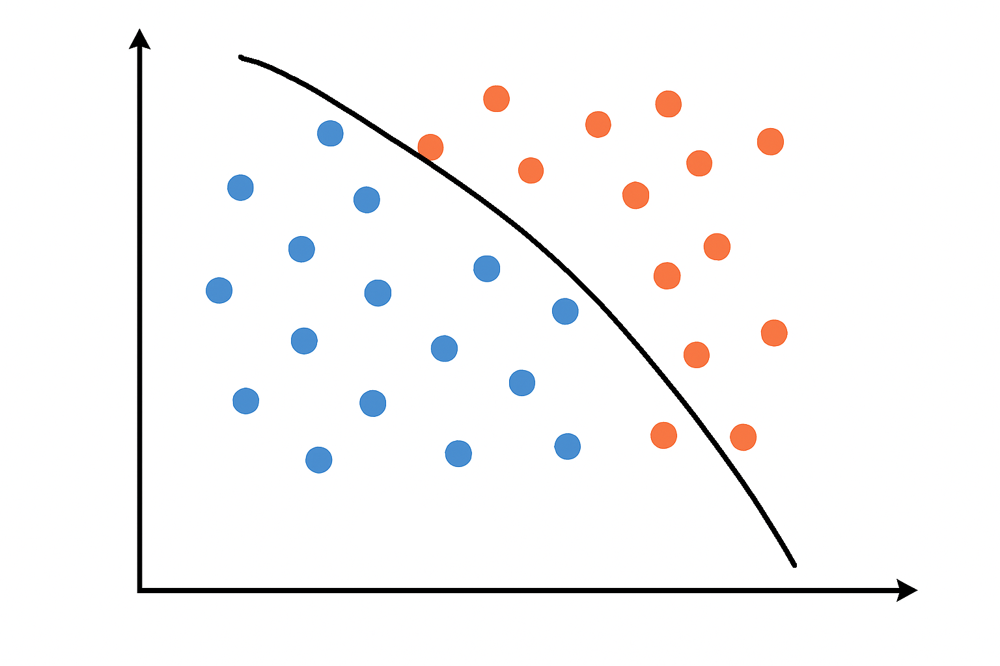
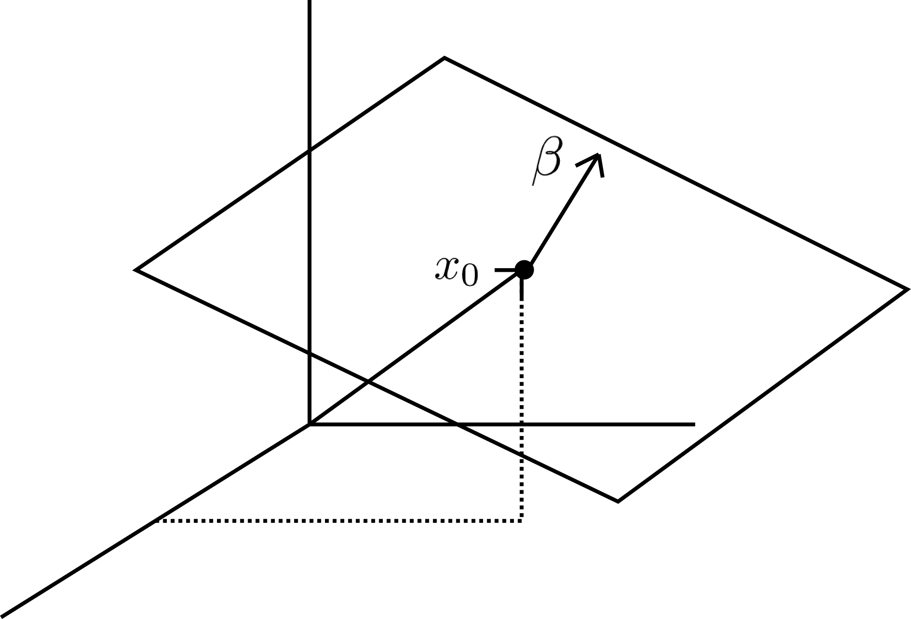
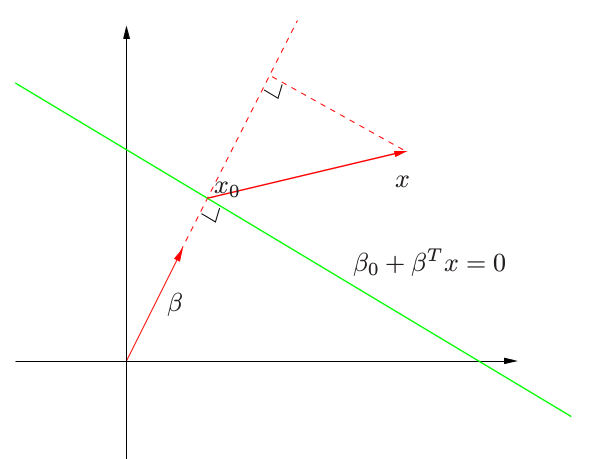
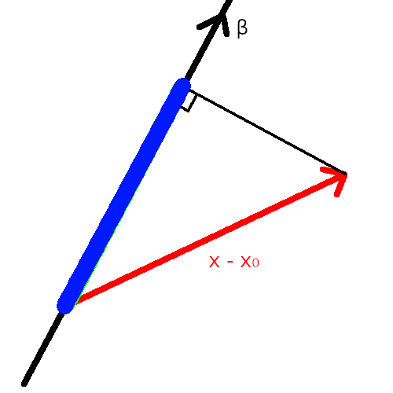
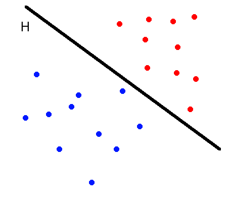
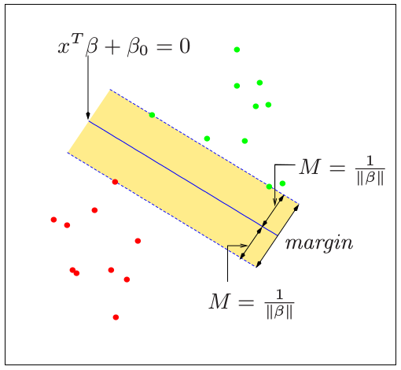
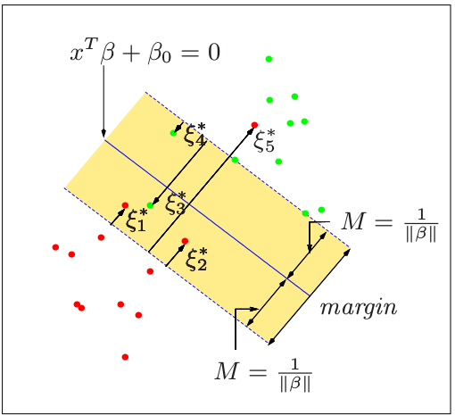
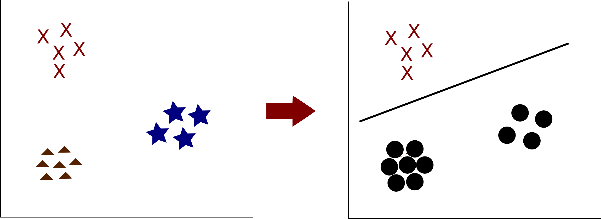
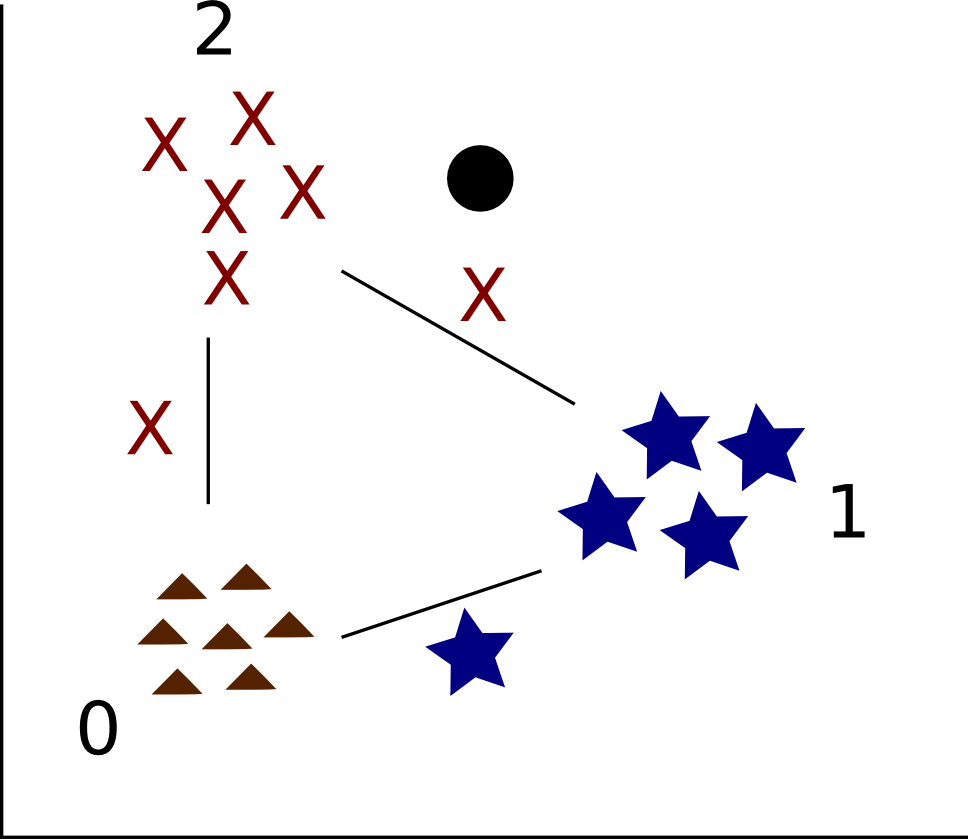

19. Support vector machines#
When working with discrete data, we often want to build a classifier that separates data points of different classes.
{kind=link}

Support vector machines (SVM) were developed with the idea that the best separation boundary is the one that not only separates the classes but does so with the largest margin - the maximum possible distance to the closest data points. As we will see, SVMs look for a hyperplane that separates two classes of data while keeping the biggest possible separation (or margin) between the two classes.
19.1. Hyperplanes#
A hyperplane \(H\) in \(V = \mathbb{R}^n\) is a subspace of \(V\) of dimension \(n-1\) (i.e., a subspace of codimension \(1\)). Notice that each hyperplane is determined by a nonzero vector \(\beta \in \mathbb{R}^n\) via:
An affine hyperplane is a hyperplane that has been possibly translated:
where \(\beta_0 \in \mathbb{R}\), and \(\beta \in \mathbb{R}^n\).
{kind=link}

In practice, people often use the term “hyperplane” to mean “affine hyperplane”.
19.2. Computing the distance from a point to a hyperplane#
In order to construct the optimization problem that we need to solve in SVM, we begin by computing the distance between a point and an affine hyperplane. Let
The figure below illustrates the hyperplane \(H\) in dimension \(2\) (green). We would like to compute the shortest distance between some point \(x\) and a point in the hyperplane \(H\).
{kind=link}

Observe that if \(x_0, x_1 \in H\), then
Thus, the vector \(\beta\) is perpendicular to \(H\). The distance between \(x\) and \(H\) is therefore equal to the length of the projection of \(x-x_0\) onto the line generated by \(\beta\). On the figure below, the distance between \(x\) and \(H\) is the length of the thick blue segment.
{kind=link}

That distance can easily be computed using the dot product. Recall that for two vectors \(u, v \in \mathbb{R}^n\) forming an angle \(\theta\), we have
The distance between \(x\) and \(H\), denoted \(d(x,H)\), is therefore given by the dot product of \(x-x_0\) with a vector of length \(1\) pointing in the direction of \(\beta\), i.e., \(\beta/\|\beta\|\):
Since \(x_0 \in H\), we have \(\beta_0 + \beta^T x_0 = 0\). Substituting in the above equation, we obtain:
Notice that in the above calculation, we implicitly made the assumption that \(x-x_0\) and \(\beta\) point in the same direction (i.e., they are on the same side of the line). When this is not the case, we get the same expression, but with a negative sign. Thus, the above formula gives us the “signed distance” between \(x\) and \(H\), i.e., the distance between \(x\) and \(H\) if \(x\) is on the side of \(H\) where \(\beta\) points to, and negative the distance if \(x\) is at the same distance, but on the other side of \(H\).
Example
In dimension \(2\), set \(\beta_0 = 1\), \(\beta = (0,1)^T\), and consider
We have
This is the line “\(y=-1\)” in the usual cartesian plane. Consider the point x = (0,2). Clearly, it is at distance \(3\) from the line. Let us verify using the formula:
Notice that \((0,2)\) is on the side of the line towards which \(\beta = (0,1)\) points to. Now, consider the point \((0,-2)\) at distance \(1\) from \(H\). We have
Here, we get the correct distance, but with a minus sign since \(x\) is on the side of \(H\) that is opposite to the direction of \(\beta\).
19.3. Linearly separable data#
Consider the binary classification problem that we examined in the context of logistic regression. We are given data points \((x_i, y_i)\) with \(x_i \in \mathbb{R}^p\) and \(y_i \in \{0,1\}\). We say that the data is linearly separable if there exists a hyperplane \(H\) such that points of one category are all one one side of \(H\), and points from the other category are all on the other side.
{kind=link}

Suppose we relabel our data so that so that \(y \in \{-1,1\}\) instead of \(\{0,1\}\) (e.g., replace labels “0” by “-1”). If the data is linearly separable, there exists a hyperplane \(H = \{x \in \mathbb{R}^p : \beta_0 + \beta^T x = 0\}\) such that all data points with label \(1\) are on one side of \(H\), and all data points with label \(-1\) are on the other side of \(H\). Thus,
perfectly classifies the data, where
is the sign function.
19.4. Separating data with the largest margin#
When data is linearly separable, observe that a separating hyperplane is not unique.
{kind=link}

Fig. 19.1 ESL, Figure 12.1#
In that case, it makes sense to look for the hyperplane that separates the data with the largest possible margin (the size of the region with no data, or “no man’s land”).
Recall that our data is of the form \((x_i, y_i)\) with \(x_i \in \mathbb{R}^p\) and \(y_i \{-1,1\}\). We want to classify points using \(f(x) = \mathop{\rm sign}(\beta_0 + \beta^T x)\) for some hyperplane \(H\) determined by \(\beta_0\) and \(\beta\). Without loss of generality, we can assume \(\|\beta\| = 1\). Observe that
This is because the sign of \(y_i\) needs to match the sign of \(f(x_i)\) for the classification to be correct. Also, recall from our above calculations that
Thus, when the data is linearly separable, we can find the largest margin by solving the optimization problem:
We will transform this problem into its usual form used in optimization. First, we can remove \(\|\beta\|=1\) by replacing the constraint by
Next, we can always rescale \((\beta, \beta_0)\) so that \(\|\beta\| = 1/M\):
This problem is equivalent to:
We now recognize the problem as a standard convex optimization problem with a quadratic objective and linear inequality constraints. This can be solved using standard optimization packages.
19.5. Non-separable data#
We now examine a possible approach to generalize the above ideas when the data is not linearly separable. In that case, we will allow some points to be misclassified, while keeping some control over the error.
{kind=link}

Fig. 19.2 ESL, Figure 12.1#
More specifically, let us replace the constraint \(y_i(\beta_0 + \beta^T x) \geq M\) by
Notice how the right-hand term relaxes the previous constraint. Instead of having each point at distance at least \(M\) from the hyperplane \(H\), some points can now fall into the \(M\)-margin when \(\xi_i > 0\). For example, when \(\xi_i = 1/2\), the \(i\)-th point is allowed to fall in the middle of the margin. When \(\xi_i > 1\), the sign of \(M(1-\xi_i)\) becomes negative and the point is allowed to be misclassified (i.e., to be on the wrong side of the hyperplane). In order to limit that kind of behavior, we add a supplementary constraint on how large the \(\xi_i\)s can be:
Our new optimization problem is therefore:
As before, we can transform the problem into its “standard” form:
which can be solved using standard optimization solvers. This is the problem solved by support vector machines.
19.6. Working with multiple classes#
So far, we have only discussed how SVM can be used to classify data coming from two categories. Several general approaches can be used to classify data coming from an arbitrary number of classes.
19.6.1. One vs all#
In the one versus all (or one versus the rest) approach, we fit the model to separate each class against the remaining classes. If we have \(K\) labels, we therefore construct \(K\) models. We label a new point \(x\) according to the model for which \(\beta_0 + x^T \beta\) is the largest.
{kind=link}

Fig. 19.3 The one vs all approach.#
For example, if our data has three possible labels (say \(A, B, C\)), we examine if the point to classify looks more like category \(A\) or not, more like category \(B\) or not, or more like category \(C\) or not.
19.6.2. One vs one#
In the one vs one approach, we train a classifier for each possible pair of classes. We thus have to train \(\binom{K}{2}\) models. A new point can then be classified using a majority vote.
{kind=link}

Fig. 19.4 The one vs one approach.#
For example, in the above example, we need to train a model for “0 against 1”, “0 against 2”, and “1 against 2”. In each case, we restrict the data to the given pair and train a SVM. We then classify the new point according to each model. In the figure above, two of the three models classify the new point as “2”. We therefore label the point “2”.
Instead of a majority vote, one can also use the distance between the new point and the hyperplane to make the classification. For example, suppose the model associated to class \(i\) vs class \(j\) is \(f_{ij}(x) = \beta_0^{ij} + \beta_{ij}^T x\). For each \(i\), we can add the value of \(f_{ij}(x)\) for all \(j\)’s that classify \(x\) as class \(i\). The final classification is the category \(i\) that has the largest score. Many other variants can also be considered.